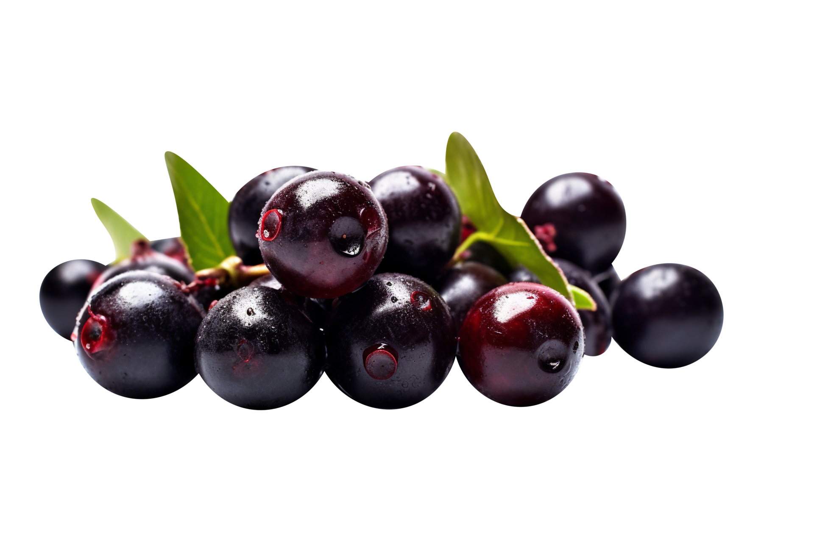

O açaí é parte da alimentação dos povos amazônicos desde antes da colonização. É um símbolo da culinária paraense, consumido principalmente com peixe, charque ou farinha. Na década de 1990, o consumo de açaí se difundiu no resto do país como alimento funcional e parte de sucos e sobremesas.
